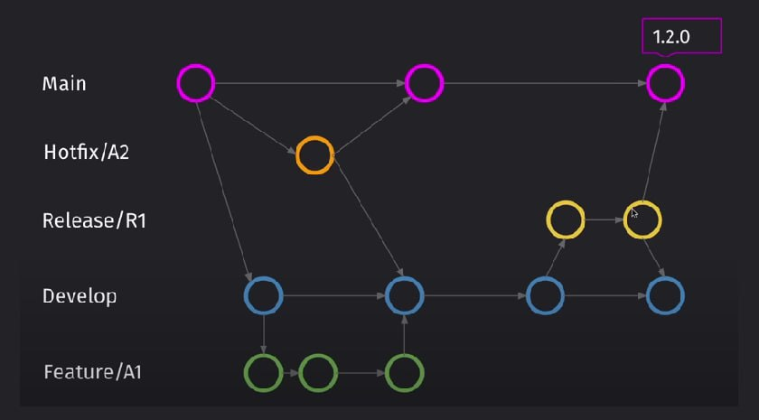

Методологии
То как вести проект в GIT
GIT Flow
Базовая база, но в интернете пишут, что не подходит для небольших комманд
Устройство
Устройство:
| Имя ветки | Как создается | Для чего | Что делаем по готовности |
|---|---|---|---|
| Develop | Один раз branch'тся от Main. Ничего не надо push-ить, только merg-ить из веток Feature | Ветка в которой ведется разработка | От Develop branch'тся ветка Release |
| Feature | Branch'тся от Develop | Ветки в которых ведется разработка новых фич. Для каждой своя ветка | По завершению merg-им с develop |
| Release | Branch'тся от Develop | Ветки в которых фиксируем нужный функционал. Исправлем баги и готовим к редизу | В конце merg-им в Main и в Develop |
| Main | Ничего не надо push-ить, только merg-ить из веток Feature и HotFix | Версия приложения готовая к публиации | |
| HotFix | Branch'тся от Main | Ветки для исправление багов в уже зарелизенной версии приложения | В конце merge'тся в Main и Develop |
